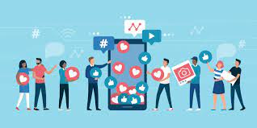
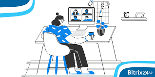
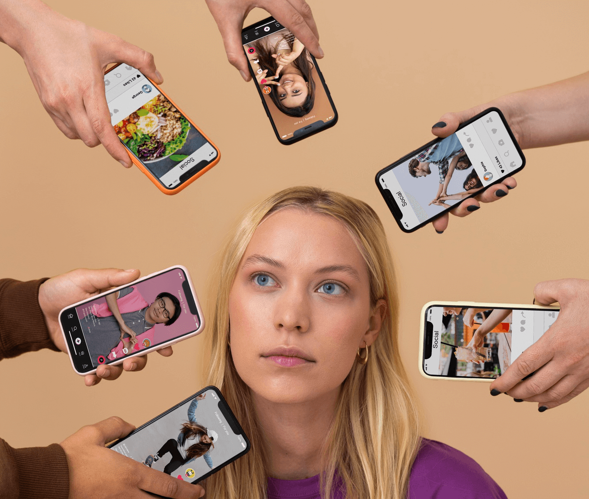
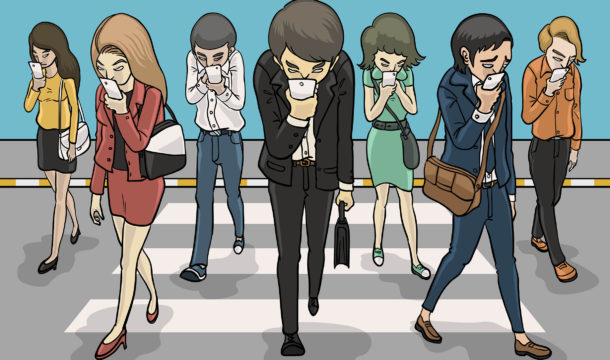

Aquí estaremos hablando de un tema de gran importancia en la actualidad
¡Alla Vamos!
Los teléfonos móviles han evolucionado en gran medida en estos últimos años, se han
incorporado en nuestro día a día y está de más decir que son utilizados como una herramienta de trabajo muy
efectiva en la mayoría de los casos, estos son algunos de los ejemplos de su uso:
1. Conexión: Facilitan la comunicación y la conexión entre personas que se encuentran en diferentes partes
del mundo, permitiendo mantener relaciones a distancia y establecer nuevas amistades.
2. Información: Son una fuente de información inmediata y variada. A través de las redes sociales, se puede
acceder a noticias, eventos, tendencias y conocimientos de diversa índole.
(Este tema lo analizaremos
más adelante con sus aspectos negativos)

3. Comunidad: Permiten la creación y participación en comunidades virtuales con intereses comunes, lo que
contribuye al desarrollo de la identidad digital y al sentido de pertenencia.
4. Plataforma para expresión: Brindan a las personas la posibilidad de expresarse, compartir sus opiniones,
ideas, creatividad, trabajos artísticos o profesionales, permitiendo así visibilizar su talento y conectarse
con audiencias interesadas.
5. Entretenimiento: Ofrecen una amplia gama de entretenimiento, desde videos divertidos hasta juegos
interactivos, lo cual ayuda a desconectar y relajarse en momentos de ocio.

6. Compartir experiencias: Permiten compartir momentos importantes de la vida, como viajes, logros,
celebraciones, lo que fortalece los lazos sociales y el sentido de comunidad.
7. Oportunidades laborales: Constituyen un medio para expandir redes profesionales, buscar empleo,
promocionar servicios o productos, y en general, desarrollar oportunidades laborales.

8. Portabilidad: Los dispositivos móviles permiten a los profesionales acceder a la información y realizar
tareas laborales desde cualquier lugar, lo que aumenta la flexibilidad y la productividad.
Al igual que todos los temas este también tiene aspectos negativos:
El uso inadecuado de teléfonos móviles y las redes sociales puede tener efectos negativos en la salud física,
mental y emocional de las personas

1- El Impacto en la salud mental, y el uso excesivo de los teléfonos móviles y las redes sociales está
asociado con problemas de salud mental como: la ansiedad, la depresión, la soledad y el bajo autoestima. La
exposición constante a contenido negativo, la comparación social y la presión por mantener una imagen
idealizada pueden contribuir a estos problemas:
Es cierto que es divertido jugar un videojuego y seguir avanzando nivel tras nivel pero ¿qué pasa cuando se
agota la batería y no puedes seguir usando el móvil?. Esto genera ansiedad en las personas, se pasan todo el
tiempo que tarda el teléfono cargando pensando en cómo pasaran el siguiente nivel ya que está el juego muy
divertido y apasionante en ese tiempo no tienes relaciones interpersonales con amigos o con miembros de la
familia esto conlleva a la soledad y con el tiempo a la pérdida de autoestima ya que no estás acostumbrado a
convivir con otras personas y ves que los demás tienen mejores relaciones sociales que tú. Por otro lado
están las personas que en lugar de jugar se pasan el día en redes sociales que no voy a mencionar subiendo
fotos y contenido buscando la aprobación constante de los demás que solo refleja falta de personalidad.
2- Distracción y falta de concentración: El constante bombardeo de notificaciones, mensajes y contenido en
los teléfonos móviles puede causar distracción, dificultades para concentrarse y afectar la productividad en
actividades diarias como el trabajo o el estudio.
¿Te ha pasado alguna vez que estás haciendo alguna tarea que requiere de gran atención y suena el teléfono?.
Quizás te halla pasado es algo normal debido a que todos estos dispositivos ya están incorporados en nuestra
vida diaria, solo queda de parte de cada persona saber que tarea es más importante. Todas estas
distracciones afectan la productividad de las personas, cuando no estas concentrado completamente en algo
probablemente lo harás mal, con una menor calidad o tardarás mucho más tiempo y no creo que te puedas
aprender bien algo ya sea para el trabajo o para la escuela y al mismo tiempo viendo contenidos en alguna
que otra App que ya conocemos (Fa…..ok)

3- Adicción y dependencia: El uso compulsivo de las redes sociales y los teléfonos móviles puede llevar a una
adicción digital, donde las personas sienten la necesidad constante de revisar sus dispositivos, lo que
puede interferir en las relaciones sociales, el sueño y otras actividades importantes:
Este punto se da la mano con los dos anteriores desde una persona que no puede dejar de jugar un juego o el
que se pasa todo el tiempo subiendo contenido y chateando como mencione en el primer punto. Estas personas
experimentan cierta dependencia a usar el teléfono al principio empieza colon algo divertido pero después se
vuelve una adicción que como toda adicción es perjudicial y más una que te hace perder algo muy valioso ( el
tiempo ), pues como se suele decir popularmente “El tiempo es oro” y “El que se va no regresa” . El tiempo es
como una inversión es mejor invertirlo en algo que proporcione ganancias aunque sean a largo plazo
4. Problemas de sueño: La exposición a la luz azul emitida por las pantallas de los dispositivos puede
interferir en la producción de melatonina, la hormona que regula el ciclo sueño-vigilia, lo que puede
provocar dificultades para conciliar el sueño y generar alteraciones en los patrones de descanso.
De este tema no hay mucho de que hablar, es recomendable activar en la noche el filtro de luz azul que traen
los dispositivos y deja de usar el mismo al menos una hora antes de irse a dormir para así mejorar la
calidad del sueño y descansar mejor para el siguiente día
Además todos estos usos indebidos pueden provocar: Efectos dañinos en la salud mental y la
percepción de nosotros mismos: La exposición constante a imágenes idealizadas en las redes sociales puede
provocar sentimientos de inseguridad, bajo autoestima y comparación negativa, especialmente entre los
jóvenes, lo que puede influir en la apreciación y la aceptación de la propia imagen corporal así un sentido
de inferioridad .
Es fundamental: Establecer límites saludables en el uso de los dispositivos móviles y las redes
sociales, fomentar el equilibrio entre la vida en línea y la vida offline, priorizar las relaciones
interpersonales reales y promover hábitos de uso consciente y responsable de la tecnología para mitigar
los efectos negativos en la salud y el bienestar de las personas.